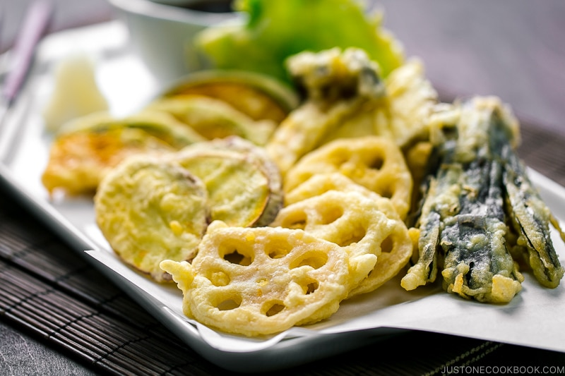

Vegetable Tempura

Description
Alongside sushi and ramen, tempura is another mandatory menu item for Japanese restaurants. Encased in a crunchy, crispy yet light batter, these perfectly deep-fried seafood, and vegetable are seriously addicting.
Some of the common vegetables used for Tempura include Japanese sweet potatoes, mushrooms (shiitake or king oyster are delicious), Kabocha squash, bell peppers, lotus roots, and eggplant. When I make vegetable tempura at home, I also like to include shiso leaves as well.
Ingredients:
- Sweet potato
- Squash
- Lotus root
- King oyster mushrooms
- Eggplant
- Shiso leaves
Preparation:
- While the oil is heating up, prepare the tempura batter. Gather all the ingredients.
- Sift the all-purpose flour into a large bowl.
- Add the iced water to a measuring cup or bowl. Then, add the egg.
- Whisk the egg and water mixture vigorously and discard the foam on the surface.
- Slowly pour the egg mixture into the flour while mixing the batter with chopsticks in a figure 8 pattern for about 15-20 seconds. Do not overmix to avoid activating the wheat gluten; it's fine to and leave some lumps in the batter. Keep the batter cold at all times by adding 1-2 ice cubes to the batter or by putting the batter bowl in a larger bowl of iced water.
Vegetable Tempura 9
- Serve the tempura immediately with the grated daikon on the side. Mix some grated daikon into the dipping sauce for a refreshing taste and dip the tempura pieces in the dipping sauce to enjoy.